CA是证书的签发机构，它是公钥基础设施(Public KeyInfrastructurePKI)的核心，CA是负责签发证书、认证证书、管理已颁发证书的机关。PKI模块中内置了本地CA功能，支持创建多个CA，支持签发RSA/ECC/SM2证书，提供证书签发功能，提供已签发证书其生命周期的管理服务。
选择 。
l根证书管理
PKI支持创建多个CA，根证书管理就是管理每个CA的根证书，根证书创建意味着CA创建，根证书删除意味着该CA被删除。
| 步骤1 | 自签根证书 |
1）点击【添加自签根证书】按钮，如下图所示。
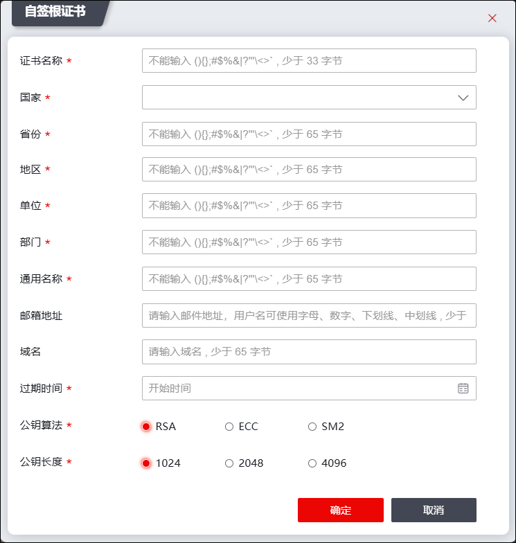
在添加自签根证书时，各项参数的具体说明如下表所示。
参数 |
说明 |
|---|---|
证书名称 |
输入自签根证书的名称。 说明： 最多输入33个字符（一个汉字占三个字节；一个字母/数字占一个字节），区分大小写。 |
国家 |
设置根证书的网关设备的国家属性。 说明： 输入两个英文字符。 |
省份、地区、单位、部门、通用名称、电子邮件 |
设置自签根证书的网关设备的属性。 |
域名 |
配置证书请求域名。 |
过期时间 |
设置证书过期时间，最少30天。 |
公钥算法 |
设置加/解密数据包使用的算法类型。 可选项：RSA、ECC和SM2。 |
私钥长度 |
公钥算法选择为“RSA”时，设置RSA算法私钥长度，单位为bit，长度可选择1024、2048、4096。 |
公钥参数 |
公钥算法选择为“ECC”时，设置ECC算法参数。 |
2）点击【确定】按钮完成自签根证书的添加。
| 步骤2 | 导入根证书 |
1）点击【导入】按钮，如下图所示。
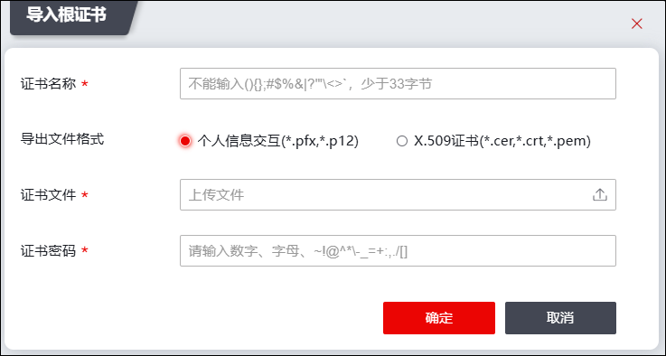
在导入根证书时，各项参数的具体说明如下表所示。
参数 |
说明 |
|---|---|
证书名称 |
输入合法的根证书名称。 |
导入文件格式 |
可选择对应的证书导入格式。 可以导入的证书分为个人信息交互(*.pfx，*.p12)和x.509证书(*.cer,*.crt,*.pem)两种格式。 |
证书文件 |
必选项，点击“ |
私钥文件 |
文件格式选择“x.509证书”时，需单独上传私钥文件，点击“ |
证书文件密码 |
文件格式选择“个人信息交互”时，如PKCS12文件有加密密码，需指定解密密码。 |

2）点击【确定】按钮完成证书的导入。
| 步骤3 | 导出根证书 |
1）选择“根证书”，点击【导出】按钮，如下图所示。
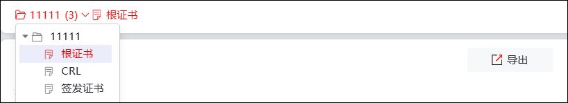
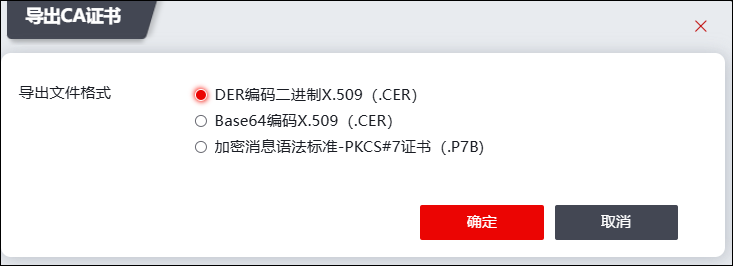
2）选择合适的文件格式，点击【确定】即可。
lCRL管理
CRL(证书作废吊销列表)管理提供了周期性更新CRL文件的功能。用户端将CRL更新到本地，就可以获得最新的已作废证书的序列号、作废原因及作废时间等。
| 步骤1 | 导出CRL文件 |
选择“CRL”，点击【导出】按钮，CRL文件下载至本地主机。
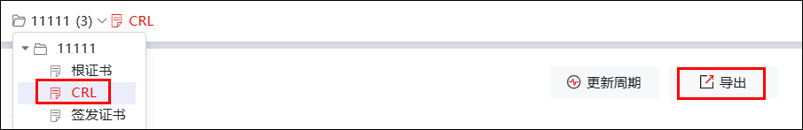
| 步骤2 | CRL更新周期 |
1）选择“CRL”，点击【更新周期】按钮，如下图所示。
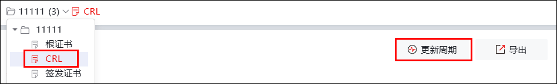
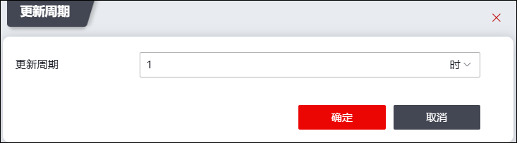
2）设置更新周期及时间单位（时、天），设置完后点击【确定】即可。
l签发证书管理
已签发证书管理提供证书查询、证书状态查询、证书作废、证书解冻、证书申请、证书续期等功能。
| 步骤1 | 自签证书 |
1）选择“签发证书”右侧的复选框，点击【直接签发证书】按钮，如下图所示。
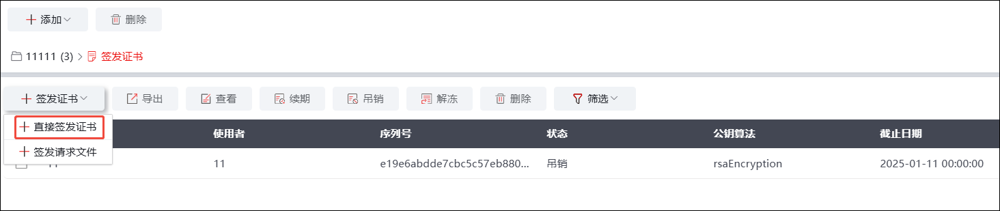
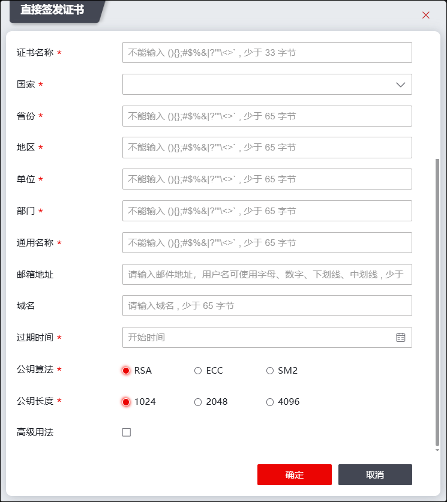
各项参数的具体说明如下表所示。
参数 |
说明 |
|---|---|
证书名称 |
输入直接签发证书的名称。 说明： 最多输入30个字符（一个汉字占三个字节；一个字母/数字占一个字节），区分大小写。 |
国家 |
设置直接签发证书的网关设备的国家属性。 说明： 输入两个英文字符。 |
省份、地区、单位、部门、通用名称、电子邮件 |
设置直接签发证书的网关设备的属性。 |
域名 |
配置证书请求域名。 |
过期时间 |
设置证时过期的时间，最少30天。 |
公钥算法 |
设置加/解密数据包使用的算法类型。 可选项：RSA、ECC和SM2。 |
私钥长度 |
公钥算法选择为“RSA”时，设置RSA算法私钥长度，单位为bit，长度可选择1024、2048、4096。 |
公钥参数 |
公钥算法选择为“ECC”时，设置ECC算法参数。 |
高级用法 |
选择是否勾选证书请求高级用法。 |
密钥用途 |
秘钥用途可选择数字签名服务、密钥加密、数据加密、抗抵赖服务、密钥协商。 |
扩展秘钥用途 |
扩展秘钥用途可选择数字签名服务、密钥加密、数据加密、抗抵赖服务、密钥协商等。 |
2）点击【确定】按钮完成直接签发证书的添加。
| 步骤2 | 签发请求文件 |
1）选择“签发证书”右侧的复选框，点击【签发请求文件】按钮，如下图所示。
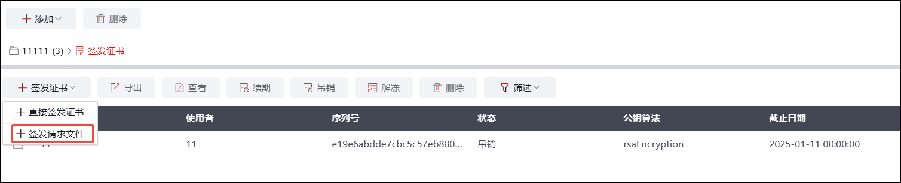
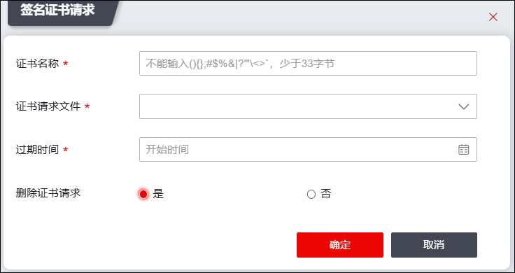
各项参数的具体说明如下表所示。
参数 |
说明 |
|---|---|
证书名称 |
输入签名证书请求的名称。 |
证书请求文件 |
选择需要签发的请求文件 |
过期时间 |
选择截至时间。 |
删除证书请求 |
选择是否删除证书请求文件。 |
2）点击【确定】即可。
| 步骤3 | 显示证书详细信息 |
勾选指定的证书，点击【查看】按钮，如下图所示。
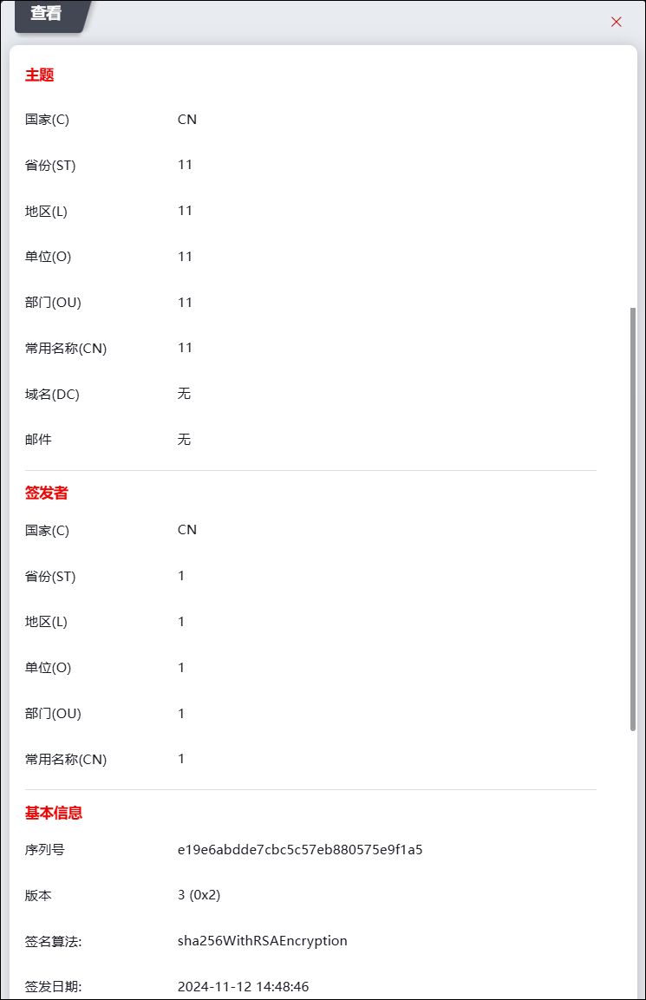
| 步骤4 | 吊销证书 |
1）勾选需要吊销的证书，点击【吊销】按钮，如下图所示。
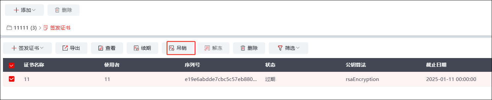
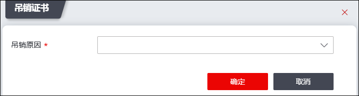
2）选择吊销原因，点击【确定】即可。
| 步骤5 | 导出证书 |
1）勾选需要导出的证书，点击【导出】按钮，如下图所示。
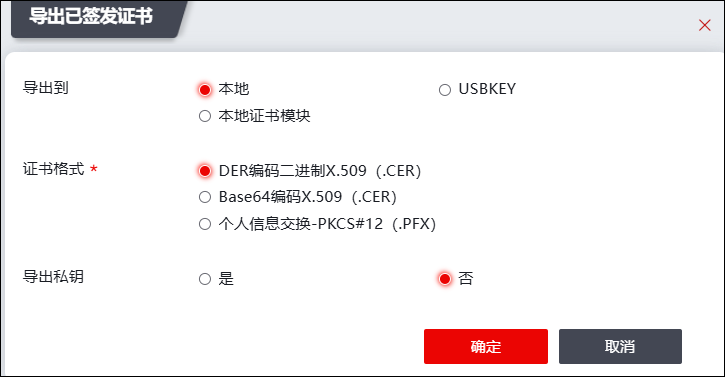
2）导出至本地。选择证书格式，点击确定即可。
3）导出至USBKEY。选择型号列表、设备列表、容器列表，选择证书用途，点击确定即可。
4）导出至本地证书模块。选择合法证书名称、合法证书站点，选择是否导出私钥，点击确定即可。
| 步骤6 | 续期证书 |
勾选需要续签的证书，点击【续签】按钮，设置续签过期时间，点击确定即可。
| 步骤7 | 解冻证书 |
选中已经吊销的证书，点击【解冻】按钮，点击确定即可。
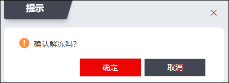